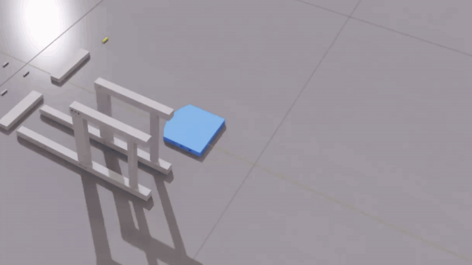
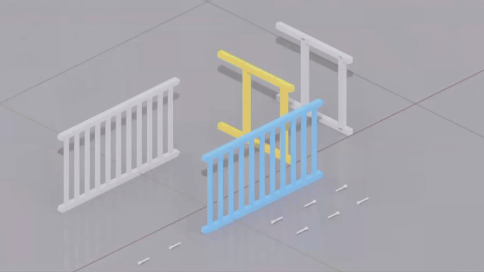
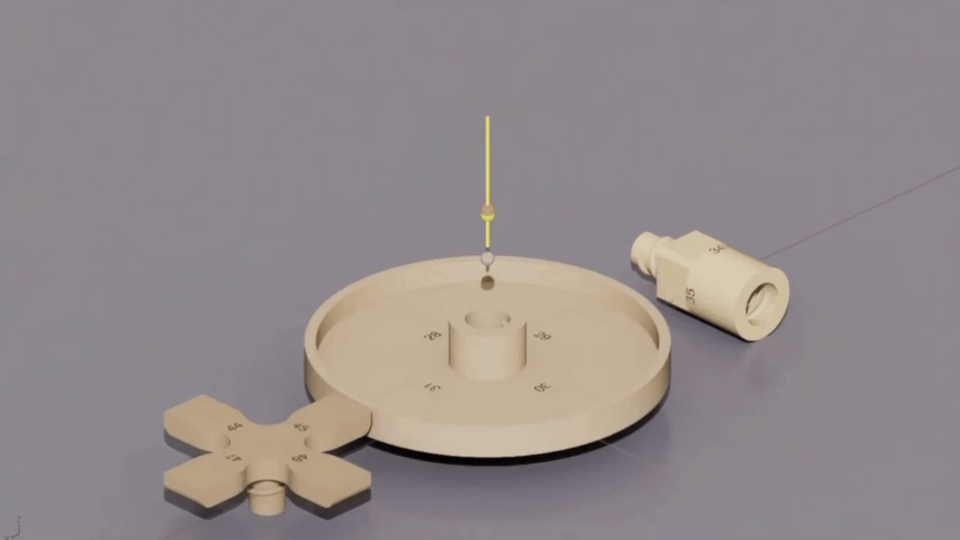
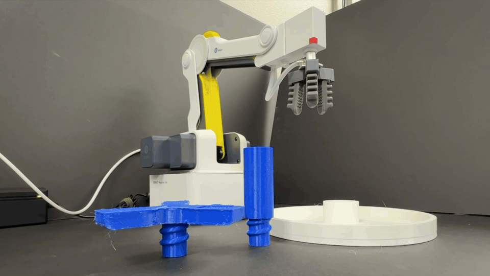

Geometry-first assembly reasoning
Assembly reasoning from individual CAD/mesh parts.
Robotic Assembly · Simulation · Physical Execution
A geometry-aware robotic assembly framework that reasons from individual CAD/mesh parts to generate assembly plans, validate assembly sequences and motions in NVIDIA Isaac Sim, and transfer validated results to a physical robot system.
Project Overview
Rather than assuming a fully assembled product model or a pre-defined mating sequence, the workflow builds an assembly plan from available part geometry, generates assembly poses and motions, checks the resulting sequence in simulation, and uses the validated motion information for robot execution.
Assembly reasoning from individual CAD/mesh parts.
Connector-aware planning for assembly reasoning from part geometry.
Pose and motion generation for representative mating operations.
Validation of the assembly sequence before physical execution.
Assembly-sequence and mating-motion simulation.
Validation of transfer from planning and simulation to hardware.
Demonstration
Representative sequence-level simulations for products from the Manual2Skill++ benchmark.


Representative local assembly-motion simulations for FurnitureBench products, showing how planned mating operations are executed in Isaac Sim.


A representative hardware demonstration showing transfer of planned assembly motion from the reasoning and simulation workflow to a physical robot system.

Manuscript under review. Implementation details, source code, decision rules, thresholds, and other unpublished methodological details are intentionally withheld while the associated manuscript is under review.
Explore More